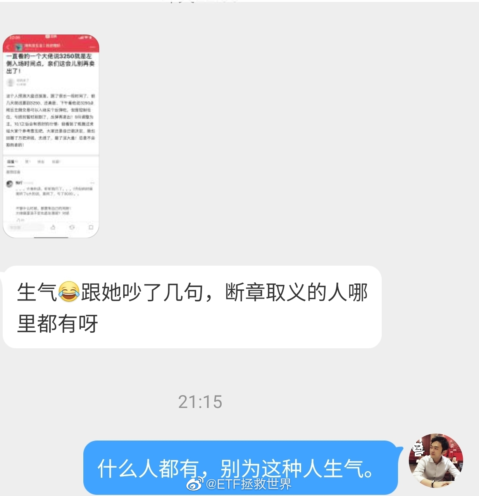
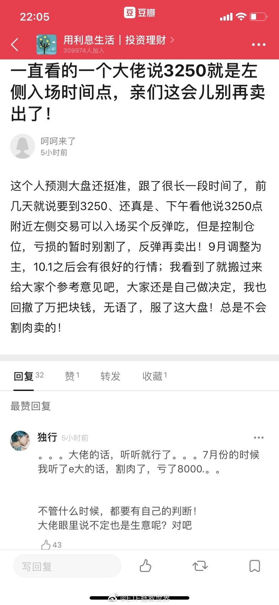

有朋友说是看了717的。717我们定时发车，关他高位接盘的什么事？我们当时卖出的盈利几十个点，不让卖了？我们盈利几十个点卖，你跟着割肉？什么玩意儿啊。  评论配图
评论配图

@ETF拯救世界:
大家可以给我点提示吗？7月听我说什么会赔8000割肉出局？
我说什么了？
我们的计划这几个月除了纯债一分钱没买过，一直在高位减持。我还劝不要追涨高位品种，我做错什么了？
我就一句话：造谣的人不得house。自己乱买赔钱赖别人的人不得house！
对，说的就是你！虽然我不知道你是谁，但你就是个人渣！
我说什么了？
我们的计划这几个月除了纯债一分钱没买过，一直在高位减持。我还劝不要追涨高位品种，我做错什么了？
我就一句话：造谣的人不得house。自己乱买赔钱赖别人的人不得house！
对，说的就是你！虽然我不知道你是谁，但你就是个人渣！
- 
- 